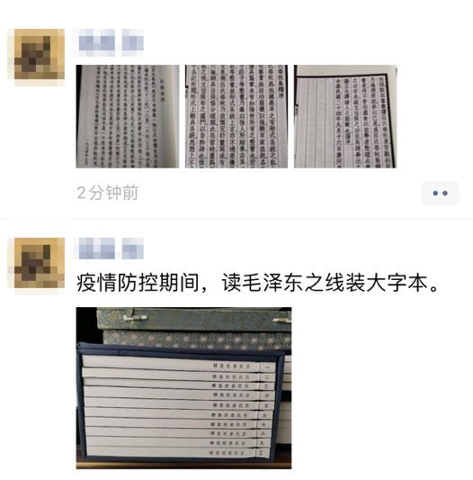
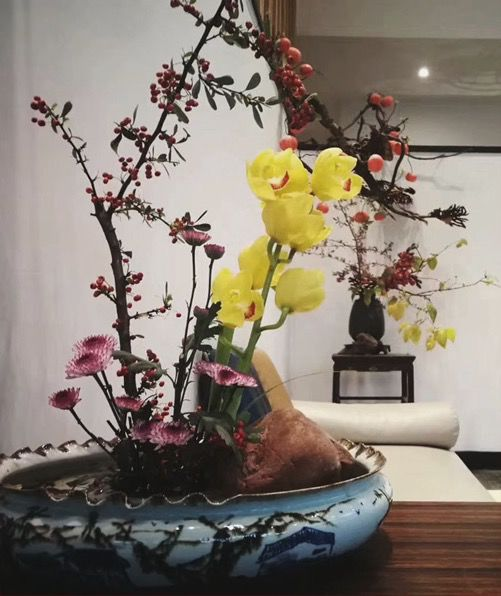
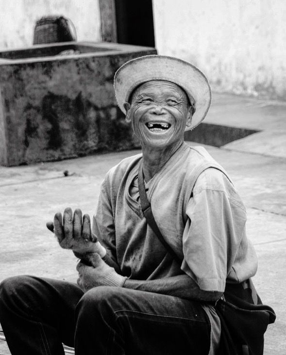
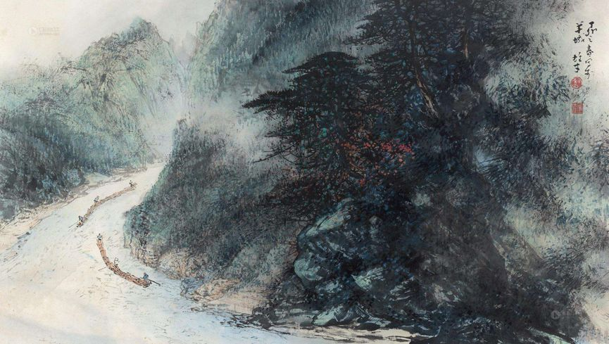

武汉中心医院又有医生殉职，韩国宣布进入战争状态，以及其他 25 条疫情新闻
原文链接 备份链接 根据丁香医生实时数据，截至 3 月 3 日 21:32 时，全国现存确诊病例 29930 例，累计确诊病例 80303 例，现存疑似病例 587 例。其中，重症病例 6806 例，死亡病例 2948 例， …

_编者按：这是嘉秋的最后一篇隔离记（前文请看 **[这里](http://mp.weixin.qq.com/s?biz=MjM5NTc1NjYyMA==&mid=2651772660&idx=1&sn=c53db9ad51bd88672ce57bf797979a79&chksm=bd09d9d78a7e50c1e91711ee372e3b25db7c029705212a864d61d62f1c1f56384ed8f3309b64&scene=21#wechat_redirect) 和 这里 **）。本来他说，有可能隔离一结束就又要去趟湖北，那这篇可就有趣了。我嘴上说 “还是别了，健康第一”，心里忍不住想，“可不是么。”_
_最终，嘉秋的隔离期结束得很平静。他目前还留在北京，但是根据我这几周来通过文字对他的了解（再看看 _这篇和 [这篇](http://mp.weixin.qq.com/s?biz=MjM5NTc1NjYyMA==&mid=2651772692&idx=1&sn=3c3963e0f1f719ab71ce348d1ae7b275&chksm=bd09d8378a7e512121b9643c37c59e3a4eaa4e9e05684cd85f579228fec3cc4448dd23bd64f0&scene=21#wechat_redirect)_ ），他再次踏上冒险之旅是早晚的事。祝他平安，一直平安。也期待他下一个故事。_
烟花三月，隔离期满。
近二十年的十几个老同学线上语音聚会，嘘寒问暖过后，便沉淀到了二零零三年非典的共同记忆：那个时候，唯有湛蓝的读书天，和不识愁滋味的少年。
人类，是乐观、健忘的物种没错。

一场春雨，万物复苏，楼上的邻居家传出了久违的吵架声。而邮箱里则忙不迭弹出账单、房租、工资与罚单。这些本该到期的约定和不请自入的诈骗电话们纷至沓来。
是时候重拾搁置的生计了？007 式的远程办公和学习早已成了新常态。连湖北的朋友们也开始对我讲，紧张的情绪不再有，甚至对每天的数字都渐已麻木。那些不愿提及的记忆，跟着雨水，挟着病毒渗入大地。
 小区内的居民走出家门练习太极拳
小区内的居民走出家门练习太极拳
丝毫没有放松管理的社区居委会，已经把我从一级关注名单上划掉。
可我还是没有正式走出家门，除了无差别的居家工作，或许因为还有些事没舍得做完？
还要从非典那年说起：在校园正式封闭前，老师给过学生选择，结果家住京西的我，非把自己隔离在了东街 1 号。唯独出乎意料的是，期末我竟拿出了四年里最好的一打成绩单。
这一次隔离有同感：丛生的杂念虽然剪不断，但选择也少得可怜，大把的时光逼得自己不得不持以专注。
图片来自我的朋友圈
百年前人类的黑暗时刻，到底还是容下了一张安静的书桌。今天，在万众隔离的日子里，那平日快节奏生活中屡屡被放下的阅读、写作、厨艺、插花、书画、茶道和药理保健等国风古道，我已在朋友圈和自己身上温习多时。
图片来自我的朋友圈
一位纪录片前辈听见我电话里传出的咳痰喘，除了立马快递来艾灸条，还不忘附上孙思邈等古代名医面的注解。
除了这次疫情中在新闻中屡现头条并伴有争议不断的中医药，老祖宗其实在 “隔离” 这类操作上也早有经验 —— 自秦朝起，就有将麻风病人集中迁移到 “疠所” 的规定；而《晋书》记载：“朝臣家有时疾，染易三人以上者，身虽无病，百日不得入宫”，不是正在说今天的潜伏期与 “密接” 隔离？
唐玄宗重视信息披露，将疫情的隔离和治疗办法刻在全国大小道路旁的木板上；文宗则在疫情期间下诏书减免户税；而无论是隋朝专门为麻风病人设立的 “疠人坊”，还是唐代《高僧传》里 “收容疠疾,男女别坊,四时供承，务令周給” 的配置，比起火神山隔离医院，更像今天的方舱。

桃源仙境图 仇英

这纠缠华夏民族数千年的麻风病，让我再次回想起 2008 年后在四川大凉山的日子：几天走下来，面对大量极度贫困、被艾滋病和毒品肆虐的彝族空心化村落，调研团感到了村民的麻木和绝望，一行人几乎被困局压垮。
赶回县城还需要三、四个小时，车子谨慎地行驶在荒芜的山路上，俯瞰着深涧里急流的江水。忽地，我们眼前出现了一座古朴得不合时宜的破旧吊桥。带队的本地 NGO 代表说，桥对面的孤山深处，坐落着自上世纪五十年代划地而治的 “麻风村”，这座吊桥则是唯一的出入口。
麻风病在中国其实早已真正 “可防、可控、可治”，但留下来了大量的麻风残疾者。他们至今住在比贫瘠之地还要偏远的孤岛上，任人遗忘。
在我们央求下，带队人最终带我们走过吊桥，徒步了两小时，直到遇见陡坡上的姐弟二人，才找到进村的入口。

姐姐搀扶破脚的弟弟走回麻风村 邱嘉秋 摄
村口的小广场上坐满了聊着天、搓着麻将的老人，四下里的中年男女刀耕火种、席地织布，还有那些山顶教室里，离蓝天很近的读书郎 —— 要知道此前几日，我还刚目睹有全村三百适龄儿童全部失学的窘况。

“痊愈” 的麻风病人 邱嘉秋 摄
四代麻风病人，肢体残缺，心灵却尚未破碎。看着他们好似带着希望的欢笑，连本地 NGO 的代表都瞠目结舌。从几十年前的冒死向外潜逃，到今天外来村民偷偷逃到麻风村落户安家。这个与世隔绝的孤岛上，尽管依旧贫寒，但上演着我们并不熟悉的生活。
好友海芬今天对我说：美国结束阿富汗战争，叙、土冲突升级，百万人流离失所，土耳其开放边境，数万叙利亚难民冲击隔离屏障打算逃往欧洲，本都该是近日倍受关注的大新闻。这些也是人间苦难，也击碎了无数幸福家庭。对受伤的人们而言，自己的家就是疫情的中心、悲剧的全部。
疫情的阴影下到底还藏着多少黑暗？前天晚上，我收到了一条微信：
“一直以来虽然觉得难，建立培训基地被一次次骗，欠下债务，但我没觉得过不去，可以慢慢还··· 疫情一晃一个月过去了, 如今我真的不知所措。这段时间我看了很多无臂的，他们发很多视频，为得到关注，是为了生活，这个事情上我一直有个坎，但如今我想了很多，我也想为了机构发展，把自己卖了。”
这段话来自没有双臂的燕子 —— 我见过最积极、乐观和自立的人之一。十年来，她的机构一直在帮聋哑、唐氏、自闭、肢残等各种残障人士培训工作技能，帮他们重回社会。
她对我说过，“在北京每搬一次家，你总会觉得这个小区可能没有残疾人住。” 燕子安顿下来后，每天就出去晨走。
“半个月后，我走在小路上，迎面走来了一个残疾人，只是害羞地向我点点头。第二天，另一个残疾人走来跟我打招呼。慢慢地，我发现小区里其实有很多残疾人住，跟我曾住过的那些小区一样。” 他们看到了燕子，也走出了封闭的家门。
其实有很多人一直以来都在众人的目光之下，把自己隔离着，就在我们的身边。如今，帮助他们走出无形隔离的人，自己站在了十字路口。

隔离总会期满，灾难总在周而复始。结束前，我们还留下了什么？
一个月前，我们曾帮忙协调世界各地的医疗物资支援重灾区浙江温州。如今，新冠肺炎在全球大爆发，温州同乡会开始倒转，全力向海外的重疫区提供支援。“因意大利疫情严重，我们决定先将这批物资发往意大利米兰。”
世纪传染病到来，没人可以独善其身。与仍旧停留在反华情绪、种族歧视，以及 “切断海外反向输入” 的讨论相比，“人类命运共同体” 不是本应如此休戚与共么？麻风村倒转边界，靠得显然不是口罩之下的彼此猜忌。
以前讲过的卖菜老伯，因为一意孤行深夜涉险去给客户运送平价菜，跟家人闹翻，可到了最为农忙的复工关键时刻，他不仅得到了菜农们的物资支持，家族群里的几个兄弟姐妹也纷纷赶来家里帮忙。
“我是最有福气的，有哥哥姐姐，有弟弟妹妹，中间一个老三，什么都不用操心。”
后来我才知道，老伯年少时曾是镇上的中考状元，后来放弃了上大学的机会，留在家乡务农，但文采、梦想和气节，他从来都没有放下过。

清江放排图 （《九州·旅人·柏舟》里的朱缨，取材于古代被强制隔离的麻风病人，以放排为生；全书是关于隔离、残疾、尊严和无名之辈）
那些曾经有梦的人，纵其一生，燃烧自己，哪怕只为逆行，一小段路。
燕子清晨在小区的步道上昂首挺胸，倔强的老伯穿梭在熟悉的村间小路，江水在那座连通孤岛和人心的吊桥下，奔流不息。
Life is hard, life is always hard.
隔离记 毕
// 作者：邱嘉秋
// 编辑：Alexwood
在这次疫情中，你是否被迫改变了自己的生活习惯，你和周围的人产生了怎样新的关系，你获得了哪些观察和思考？如果你有想法想要分享，请发送电子邮件到 tougao@yishiyise.com，注明 “武汉呼叫”，我们的编辑看到后可能会与你联系。
2019 年年末的时候我们希望每个人都能在 2020 年更脚踏实地一点，而 2020 如此凶猛，当我们都困在这场灾难之中，每一个你身边的故事带来的感受或许都将指向我们的未来。虽然叫 “武汉呼叫”，但疫情影响的是我们所有人。无论你来自哪里，身在哪里，我们都想听到你的故事。


原文链接 备份链接 根据丁香医生实时数据，截至 3 月 3 日 21:32 时，全国现存确诊病例 29930 例，累计确诊病例 80303 例，现存疑似病例 587 例。其中，重症病例 6806 例，死亡病例 2948 例， …
原文链接 备份链接 温州抗疫的“小目标”在变：1月29日是“奋战十天、拿下拐点”；如今是“力争到3月10日，企业复工率、产能恢复率达100%”。 文 | 《财经》记者 王静仪 编辑 | 施智梁 2月初将浙江省温州“小汤山”医院从无到有准 …
原文链接 备份链接 上海市家协从防疫之初，就明确了“防疫情”和“保刚需”这两个目标。此次疫情也充分反映出家政行业的特殊性，无论是马上要实施的《上海市家政服务条例》，还是去年国务院提出的“促进家政服务业提质扩容36条”都是希望家政行业能够尽 …
原文链接 备份链接 以下文章来源于地球青年图鉴 ，作者地青 在持续蔓延的新冠肺炎疫情之下，中国留学生们的求学路相比往常，困难重重。有人为了按时返校，正在尝试辗转第三国避开入境禁令，也有人只好被迫休学。与之而来的，还有高昂学费的压力，房租 …
原文链接 备份链接 “ - 疫 情 之 下 - 如果没有按下全国的紧急暂停键，所有居民足不出户，所有像老陈这样的物业人员全力守护的最后一公里，也没有现在渐近的明朗和希望。 ” 1 大年30那天中午，重庆渝北某小区的物业管家老陈在家和家人 …